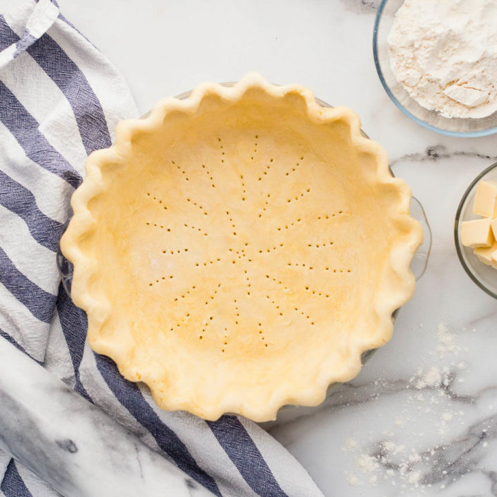

Flaky Pie Crust

Melt in the mouth flaky pie crust!
This pie crust recipe is the perfect companion for all your favorite pies! And it just so happens to be vegan! I like to use this recipe when I make apple pies. For apple pie recipe visit Perfect Apple Pie.
Make sure that all of your tools and ingredients are chilled before prepping your crust and give the finished crust plenty of time to chill in the fridge for maximum flake factor!
This recipe will yeild one crust. Double the recipe for covered pies!
Ingredients
- 2 C all-purpose flour
- 1/4 tsp salt
- 3/4 C vegan butter
- 4-8 Tbs ice water
Steps
Before you get started, chill all ingredients and tools.
- Mix flour and salt in a medium mixing bowl
- Cut the chilled vegan butter into the flour mixture using a fork until it is in small pieces
- Slowly add ice water, 1 tbs at a time, while gently mixing with a fork. Keep adding the water and stirring until the pie dough starts to clump together on it's own. The dough should look crumbly but hold together. It shouldn't be wet or sticky.
- On your countertop, lay out a piece of plastic wrap. Dump the crumbly vegan pie dough in the center of the plastic wrap. Very tightly wrap the dough into a flat disk so that the dough doesn't appear crumbly at all.
- Refrigerate for 2 hours before rolling out.
- After chilling the dough, unwrap it and place it on a liberally floured surface. Roll the dough from the center to the edges in different directions. Roll it until it is at least two inches larger than your pie plate. Gently lift the dough and transfer to the pie plate.
- Chill until ready for you and follow filling directions as according to your pie recipe!